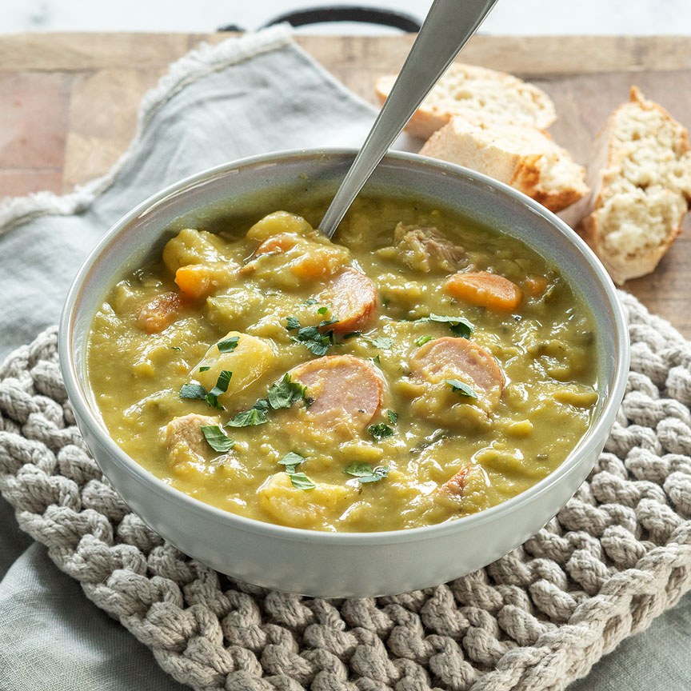

Mijn zelfgemaakte erwtensoep

Mijn zelfgemaakte erwtensoep waar iedereen gek op is!
Mijn erwtensoep valt bij iedereen in de smaak. en ondanks ik zelf geen echte Nederlander ben kan ik het recept beter dan de meeste inlanders,
nog niet overtuigt geen probleem probeert u het recept zelf maar eens, en u zult versteld staan van de hoeveelheid smaak het heeft.
Ingrediënten
- 1 Knolselderij
- 2 Laurierblaadjes
- 3 Hamlappen
- 1 Rookworst
- Spekjes
- 1kg Spliterwten
- 1 Prei
- 3 Uien
- 4 Wortelen of 2 Grote winterpeen
- 2 Grote aardappelen
- 3 Blokjes Kippenbouillon
- 2 Blokjes Runderbouillon
- Peper & zout
Bereidingswijze
- Begin met 2,5L water op te zetten met de bouillon blokjes, de spliterwten en de laurierblaadjes
- Dan begint u met het snipperen van 1 ui en snijd en wast de prei, die gooit u alvast bij het bouillon
- Daarna gooit u de hamlappen ook in het bouillon en laat u ongeveer 1 uur meekoken
- Dan begint u met het snijden van de overige groentes en gooit dit ook in de pan
- peper en zout toevoegen naar smaak
- Dan na ongeveer 1 uur haalt u de hamlappen eruit en snijd dit in kleine blokjes en gooit dit samen met de spekjes weer in de pan
- Snijd alvast de aardappelen en rookworst
- Laat het zachtjes doorkoken tot alle erwten zijn opgelost, daarna gooit u de rookworst erbij met de aardappelen en laat het nog ongeveer 20min koken
- En eet smakelijk
- P.s de volgende dag is het super dik
Meer recepten